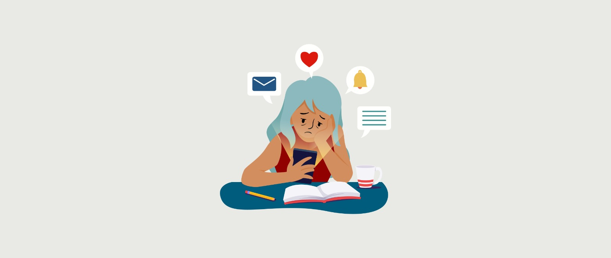

¿Qué es?
La dependencia tecnológica ocurre cuando una persona utiliza demasiado dispositivos, aplicaciones o servicios digitales y le cuesta realizar ciertas actividades sin ellos.
Tipos más comunes
- Redes sociales y mensajería.
- Teléfonos inteligentes y tabletas.
- Videojuegos y entretenimiento en línea.
- Servicios de streaming.
- Inteligencia artificial.
Consecuencias
El uso excesivo de la tecnología puede provocar pérdida de tiempo, dificultades en los estudios y menor interés por actividades del mundo real.
Lo importante no es dejar de utilizar la tecnología, sino encontrar un equilibrio.
¿Cómo podemos evitarla?
- Establecer límites de tiempo.
- Tomar descansos durante el día.
- Realizar actividades sin dispositivos.
- Pasar más tiempo con otras personas.
- Ser conscientes del tiempo que pasamos conectados.

El uso excesivo del celular
Los celulares son muy útiles, pero también pueden convertirse en una distracción cuando los usamos constantemente.
Recuerda
La tecnología es una herramienta. Nosotros decidimos cómo utilizarla.
© 2026 - Dependencia tecnológica